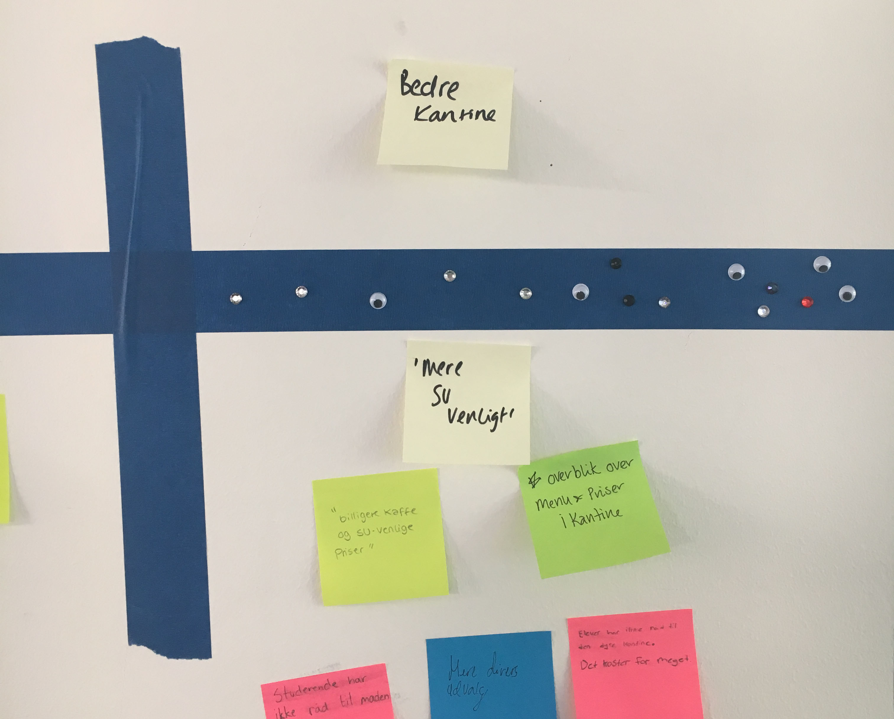
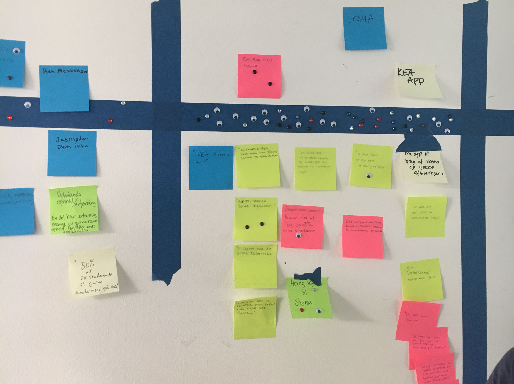
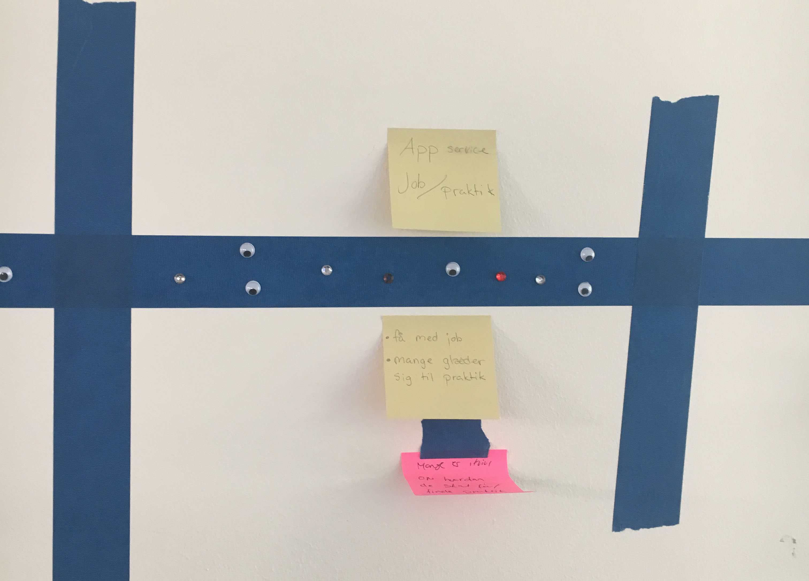
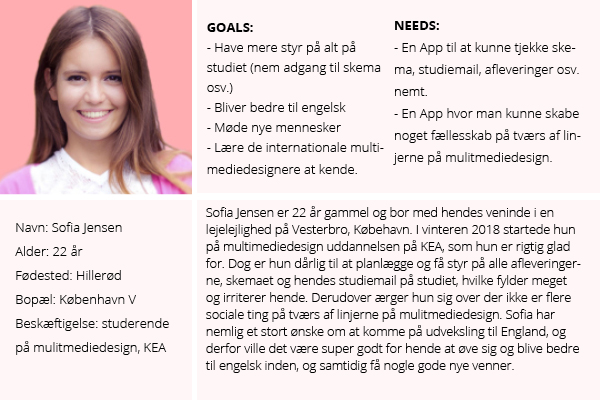

KEA app
Link til GitHub-repository
Brugerresearch
Dokumentation af empiri i 4 trin:
Indsaml og organiser data
Vi har vha. et spørgeskema fået en masse gode og uddybende svar. Spørgeskemaet var med spørgsmål hvor brugerne skulle svar længere og uddybende svar, hvilke giver os nogle kvalitative svar. Respondenterne var fra den danske linje på multimediedesign, og undersøgelsen blev udført i fællesskab på skolen på Survey. Fordelingen af køn var næsten 50/50, 70% af de studerende var 15-25 år gamle og størstedelen var bosat i Københavns Kommune.
Data-mining
Af interessant data var bl.a. at næsten alle af de studerende har dansk som modersmål, men næsten halvdelen fortrækker engelsk som arbejdssprog. De studerende bruger deres smartphones til at være sociale, være i kontakt med venner og familie, og til underholdning. De studerende mangler på kea særligt en billigere kantine (sagt mange gange) og en app med skema og bedre stuktur end fronter.
De studerende holder af studielivet på KEA, samt at studiet er meget frit. De studerende glæder sig særligt til praktik og udveksling. Kea.dk bruger størstedelen slet ikke til noget, her er svar til hvad de studerende bruger kea.dk til: "Intet", "Ingenting", "Absolut ingenting" mm.
De fleste af de studerende udlukker slet ikke at de gerne vil på udveksling eller arbejde i udlandet. Fordelene ved at arbejde sammen med den internationale linje vil være at man får øget sit netværk og bliver bedre til engelsk. Citat: "Bedre engelske kundskaber og udvidet netværk", "flere kontakter og forbedre mit engelsk".
Kodning af data
Vi grupperede vores data til undervisningen, og stemte hver især på tre vi syntes var bedst.
  Identifikation af indsigter
Vi var alle meget enige om, at vi på KEA mangler en billigere og mere su venlig kantine. Dog er det svært at skabe en app som kun skal bruges til kantinen, den vil i sidste ende ikke blive brugt nok (hvilket Peder fra KEA administration også fremhævede),derudover gør den ikke noget for den internationale og danske linje får mere med hinanden at gøre..
Størstedelen stemte på at vi skulle designe en kea app, både med en nemmere vesion af fronter med skema osv., men også med et socialt aspekt hvor vi kunne komme tættere på hinanden på tværs af linjerne.
Experience map
Problemformulering
"Multimediedesignstuderende på den danske og den internationale linje har ikke meget med hinanden at gøre, det vil KEA gerne gøre noget ved. Men hvordan kan en KEA app understøtte dette? KEA app'en må også gerne forbedre de studerendes muligheder for at få et arbejde efter endt uddanelse".
Persona
Storyboard
Features og funktionaliteter
Phone features:
Check-in/status: Man kan følge med på KEA-væggen, hvor man selv og andre kan dele opslag og begivenheder. Derudover kan man følge med i opdatering af skemaet, eller hvis der bliver lagt lektier op eller man modtager studiemail.
Rediger/opret: Man kan oprette og redigere opslag og begivenheder man kan dele på KEA-væggen. Derudover kan man oprette mails.
Dokumentation af Design Charette
Prototype
XD prototype
Test af prototype
(Min test af min prototype fik jeg desværre ikke filmet)
Min test person fik min prototype XD, og jeg gennemgik de forskellige funktioner med hende. Jeg forklarede hvad APP'en indholdte og hvad man kunne. Min test person synes at forstå alle funktionerne og sagde flere gange, "det ville være smart".
Efterfølgende stillede jeg hende nogle spørgsmål:
Svar: Den er meget minimalistik og enkelt i sit design, hvilket jeg synes gør den meget nem og overskuelig, som netop er det jeg efterspørger i en KEA APP, en man hurtigt og nemt kan tjekke. Derudover synes jeg den har nogle gode funktioner. Dog synes jeg måske der mangler noget mere til den sociale del af APP'en, her virker den for kortfattet og jeg ved ikke om der ville blive skrevet meget derinde...
Svar: Jeg er sikker på jeg ville bruge den til lektier, skema og KEA mail, hvor jeg virkelig synes den er enkel og god. Det sociale ved jeg ikke helt, det ville selvfølgelig være smart hvis der blev delt begivenheder på væggen osv., men om jeg ville bruge det ved jeg ikke.
Svar: Hmm jeg tror ikke jeg ville ændre noget som sådan, så skulle det måske være farven på den. Men det skal jo følge KEA's designmanual, så det kan man nok ikke.